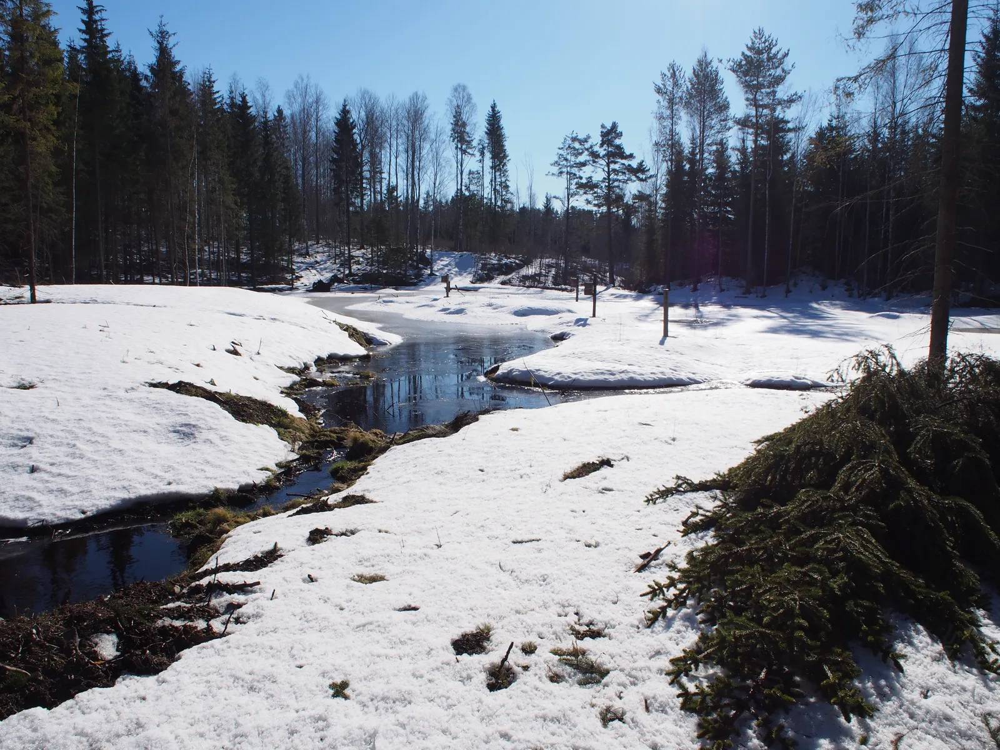
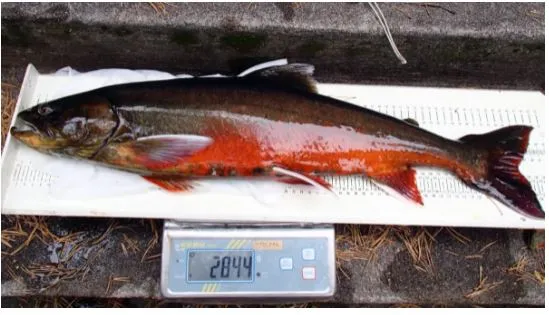
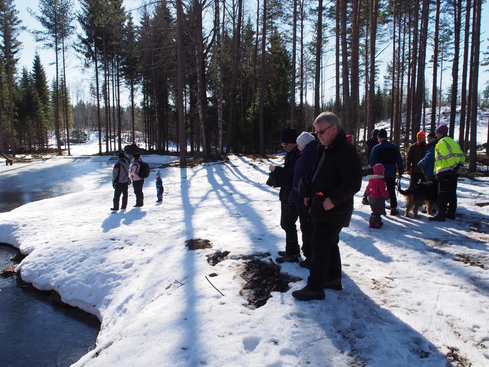

Seuranta
Näkösyvyys ja sinilevä
Talkoomittaajat tuottavat pitkää aikasarjaa veden kirkkaudesta ja kirjaavat sinilevähavainnot. Ohjeet ja lomakkeet ovat avoimia kaikille.

Pro Kuolimo ry · Savitaipale · Mikkeli · Mäntyharju
Mittaamme veden kirkkautta, rakennamme kosteikkoja ja puhumme valuma-alueen puolesta. Kuolimo on ainoa järvi Suomessa, jossa elää alkuperäinen, luontaisesti lisääntyvä saimaannieriäkanta.
79,1km²
Järven pinta-ala41,4m
Suurin syvyys864km²
Valuma-alueErinomainen
Ekologinen tilaMiksi tämä järvi
Kuolimo on karu ja kirkasvetinen järvi Etelä-Karjalan ja Etelä-Savon rajalla. Sen ekologinen tila on luokiteltu erinomaiseksi – harvinaista suomalaiselle järvelle, jonka valuma-alueella tehdään metsätaloutta ja maataloutta.
Järvessä elää äärimmäisen uhanalainen saimaannieriä. Kuolimo on Suomessa ainoa järvi, jossa kanta on alkuperäinen ja lisääntyy luontaisesti. Kanta poikkeaa geneettisesti muualta Saimaalta tavatuista nieriöistä, joten se ei ole korvattavissa istutuksilla muualta.
Nieriä tarvitsee kylmää, kirkasta ja hapekasta vettä sekä puhtaita kutusoraikkoja. Siksi kaikki, mikä hidastaa veden tummumista ja ravinnekuormaa valuma-alueella, on myös nieriän suojelua.

Näkösyvyysrekisteri
Vapaaehtoiset mittaavat näkösyvyyttä Kuolimolla ja koko valuma-alueella 3–4 kertaa vuodessa. Tässä on 7 mittauskierrosta ja 30 mittauspistettä – sama aineisto, jonka pohjalta keskustelemme viranomaisten ja maanomistajien kanssa.
Ladataan mittaustuloksia…
Toiminta
Seuranta
Talkoomittaajat tuottavat pitkää aikasarjaa veden kirkkaudesta ja kirjaavat sinilevähavainnot. Ohjeet ja lomakkeet ovat avoimia kaikille.
Kunnostus
Kosteikko pidättää valumavesien kiintoainetta ja ravinteita ennen järveä. Ensimmäinen valmistui Kapkk’ojaan 2015, nyt niitä on useita.
Kalakanta
Seuraamme nieriäkantaa, tuemme kutualueiden rauhoitusta ja kerromme kalastusrajoituksista rannoilla ja veneilijöille.
Vaikuttaminen
Järjestämme vesiensuojeluiltoja ja maastoretkiä sekä viemme mittaustuloksia kuntien, ELY-keskusten ja metsätoimijoiden pöytiin.
Jäsenyys
Jäsenmaksu on 15 € vuodessa ja alle 21-vuotiaille jäsenyys on maksuton. Jäsenmäärä on argumentti, jota kuunnellaan – ja talkoissa tarvitaan käsiä.
